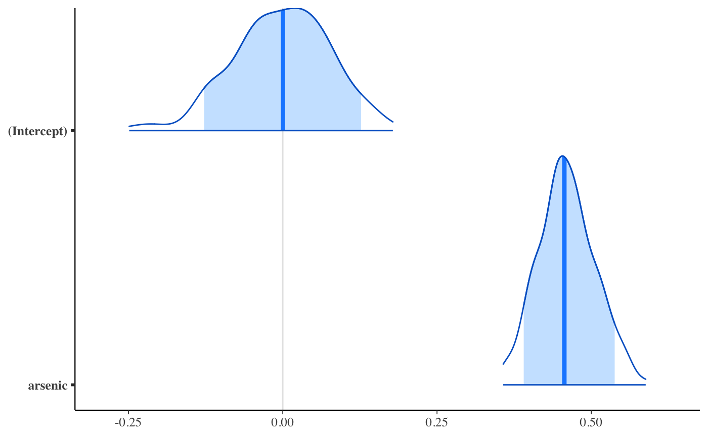
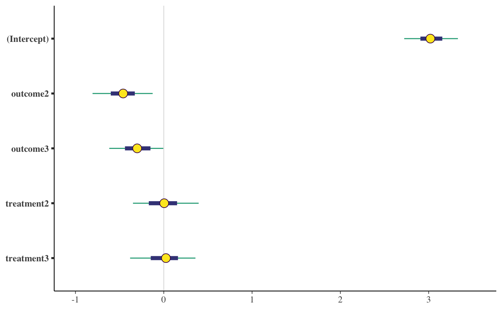
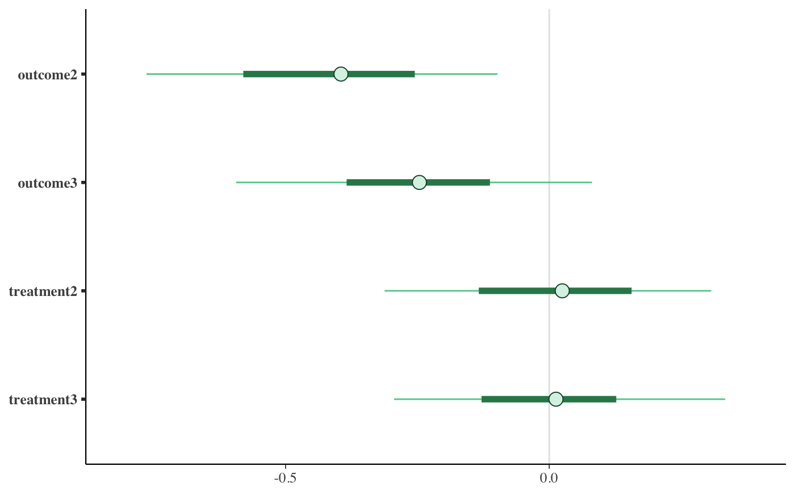
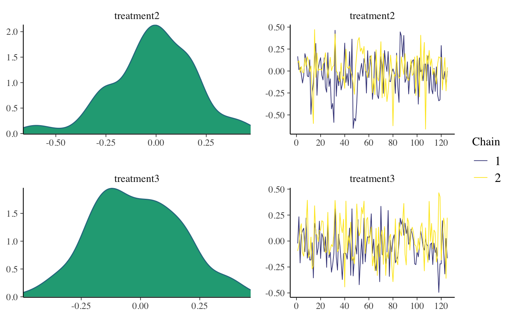
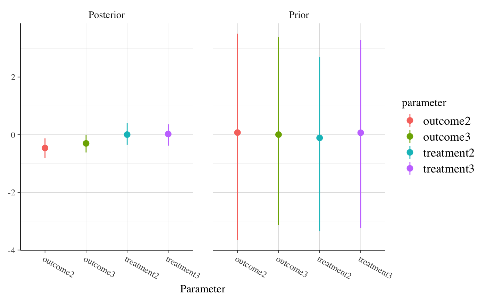
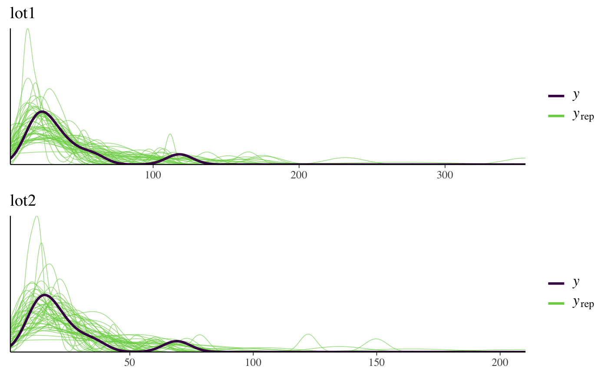
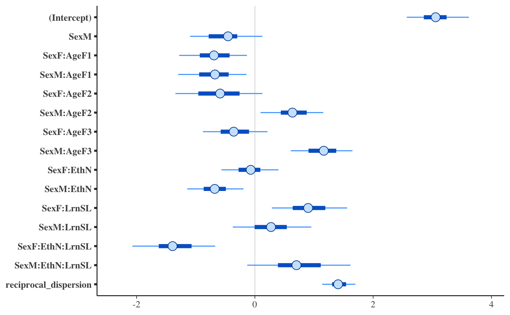

Bayesian generalized linear models via Stan
 Generalized linear modeling with optional prior distributions for the
coefficients, intercept, and auxiliary parameters.
Generalized linear modeling with optional prior distributions for the
coefficients, intercept, and auxiliary parameters.
stan_glm(formula, family = gaussian(), data, weights, subset, na.action = NULL, offset = NULL, model = TRUE, x = FALSE, y = TRUE, contrasts = NULL, ..., prior = normal(), prior_intercept = normal(), prior_aux = exponential(), prior_PD = FALSE, algorithm = c("sampling", "optimizing", "meanfield", "fullrank"), adapt_delta = NULL, QR = FALSE, sparse = FALSE) stan_glm.nb(formula, data, weights, subset, na.action = NULL, offset = NULL, model = TRUE, x = FALSE, y = TRUE, contrasts = NULL, link = "log", ..., prior = normal(), prior_intercept = normal(), prior_aux = exponential(), prior_PD = FALSE, algorithm = c("sampling", "optimizing", "meanfield", "fullrank"), adapt_delta = NULL, QR = FALSE) stan_glm.fit(x, y, weights = rep(1, NROW(y)), offset = rep(0, NROW(y)), family = gaussian(), ..., prior = normal(), prior_intercept = normal(), prior_aux = exponential(), prior_smooth = exponential(autoscale = FALSE), prior_ops = NULL, group = list(), prior_PD = FALSE, algorithm = c("sampling", "optimizing", "meanfield", "fullrank"), adapt_delta = NULL, QR = FALSE, sparse = FALSE)
Arguments
| formula, data, subset | Same as |
||||||||||
|---|---|---|---|---|---|---|---|---|---|---|---|
| family | Same as |
||||||||||
| na.action, contrasts | Same as |
||||||||||
| model, offset, weights | Same as |
||||||||||
| x | In |
||||||||||
| y | In |
||||||||||
| ... | Further arguments passed to the function in the rstan
package ( |
||||||||||
| prior | The prior distribution for the regression coefficients.
See the priors help page for details on the families and
how to specify the arguments for all of the functions in the table above.
To omit a prior ---i.e., to use a flat (improper) uniform prior---
Note: Unless |
||||||||||
| prior_intercept | The prior distribution for the intercept.
Note: If using a dense representation of the design matrix
---i.e., if the |
||||||||||
| prior_aux | The prior distribution for the "auxiliary" parameter (if
applicable). The "auxiliary" parameter refers to a different parameter
depending on the
|
||||||||||
| prior_PD | A logical scalar (defaulting to |
||||||||||
| algorithm | A string (possibly abbreviated) indicating the
estimation approach to use. Can be |
||||||||||
| adapt_delta | Only relevant if |
||||||||||
| QR | A logical scalar defaulting to |
||||||||||
| sparse | A logical scalar (defaulting to |
||||||||||
| link | For |
||||||||||
| prior_smooth | The prior distribution for the hyperparameters in GAMs, with lower values yielding less flexible smooth functions.
|
||||||||||
| prior_ops | Deprecated. See rstanarm-deprecated for details. |
||||||||||
| group | A list, possibly of length zero (the default), but otherwise
having the structure of that produced by |
Value
A stanreg object is returned
for stan_glm, stan_glm.nb.
A stanfit object (or a slightly modified
stanfit object) is returned if stan_glm.fit is called directly.
Details
The stan_glm function is similar in syntax to
glm but rather than performing maximum likelihood
estimation of generalized linear models, full Bayesian estimation is
performed (if algorithm is "sampling") via MCMC. The Bayesian
model adds priors (independent by default) on the coefficients of the GLM.
The stan_glm function calls the workhorse stan_glm.fit
function, but it is also possible to call the latter directly.
The stan_glm.nb function, which takes the extra argument
link, is a wrapper for stan_glm with family =
neg_binomial_2(link).
References
Gelman, A. and Hill, J. (2007). Data Analysis Using Regression and Multilevel/Hierarchical Models. Cambridge University Press, Cambridge, UK. (Ch. 3-6)
Muth, C., Oravecz, Z., and Gabry, J. (2018) User-friendly Bayesian regression modeling: A tutorial with rstanarm and shinystan. The Quantitative Methods for Psychology. 14(2), 99--119. https://www.tqmp.org/RegularArticles/vol14-2/p099/p099.pdf
See also
stanreg-methods and
glm.
The various vignettes for stan_glm at
http://mc-stan.org/rstanarm/articles/.
Examples
if (!grepl("^sparc", R.version$platform)) { ### Linear regression fit <- stan_glm(mpg / 10 ~ ., data = mtcars, QR = TRUE, algorithm = "fullrank") # for speed of example only plot(fit, prob = 0.5) plot(fit, prob = 0.5, pars = "beta") }#> ------------------------------------------------------------ #> EXPERIMENTAL ALGORITHM: #> This procedure has not been thoroughly tested and may be unstable #> or buggy. The interface is subject to change. #> ------------------------------------------------------------ #> #> #> #> Gradient evaluation took 4.4e-05 seconds #> 1000 transitions using 10 leapfrog steps per transition would take 0.44 seconds. #> Adjust your expectations accordingly! #> #> #> Begin eta adaptation. #> Iteration: 1 / 250 [ 0%] (Adaptation) #> Iteration: 50 / 250 [ 20%] (Adaptation) #> Iteration: 100 / 250 [ 40%] (Adaptation) #> Iteration: 150 / 250 [ 60%] (Adaptation) #> Iteration: 200 / 250 [ 80%] (Adaptation) #> Iteration: 250 / 250 [100%] (Adaptation) #> Success! Found best value [eta = 0.1]. #> #> Begin stochastic gradient ascent. #> iter ELBO delta_ELBO_mean delta_ELBO_med notes #> 100 -2e+02 1.000 1.000 #> 200 -8e+01 1.091 1.181 #> 300 -7e+01 0.789 1.000 #> 400 -6e+01 0.631 1.000 #> 500 -5e+01 0.530 0.187 #> 600 -5e+01 0.457 0.187 #> 700 -5e+01 0.398 0.156 #> 800 -4e+01 0.358 0.156 #> 900 -4e+01 0.320 0.126 #> 1000 -4e+01 0.289 0.126 #> 1100 -4e+01 0.190 0.091 #> 1200 -4e+01 0.073 0.076 #> 1300 -4e+01 0.057 0.044 #> 1400 -4e+01 0.043 0.023 #> 1500 -4e+01 0.031 0.020 #> 1600 -4e+01 0.023 0.018 #> 1700 -4e+01 0.019 0.014 #> 1800 -4e+01 0.015 0.014 #> 1900 -4e+01 0.014 0.014 #> 2000 -4e+01 0.014 0.015 #> 2100 -4e+01 0.015 0.015 #> 2200 -4e+01 0.015 0.015 #> 2300 -4e+01 0.014 0.014 #> 2400 -4e+01 0.015 0.015 #> 2500 -4e+01 0.016 0.016 #> 2600 -4e+01 0.017 0.016 #> 2700 -4e+01 0.018 0.016 #> 2800 -4e+01 0.016 0.016 #> 2900 -4e+01 0.015 0.016 #> 3000 -4e+01 0.015 0.016 #> 3100 -4e+01 0.016 0.019 #> 3200 -4e+01 0.015 0.019 #> 3300 -4e+01 0.015 0.019 #> 3400 -4e+01 0.012 0.016 #> 3500 -4e+01 0.011 0.006 MEDIAN ELBO CONVERGED #> #> Drawing a sample of size 1000 from the approximate posterior... #> COMPLETED.### Logistic regression head(wells)#> switch arsenic dist assoc educ #> 1 1 2.36 16.826 0 0 #> 2 1 0.71 47.322 0 0 #> 3 0 2.07 20.967 0 10 #> 4 1 1.15 21.486 0 12 #> 5 1 1.10 40.874 1 14 #> 6 1 3.90 69.518 1 9wells$dist100 <- wells$dist / 100 fit2 <- stan_glm( switch ~ dist100 + arsenic, data = wells, family = binomial(link = "logit"), prior_intercept = normal(0, 10), QR = TRUE, chains = 2, iter = 200 # for speed of example only )#> #> SAMPLING FOR MODEL 'bernoulli' NOW (CHAIN 1). #> #> Gradient evaluation took 0.000576 seconds #> 1000 transitions using 10 leapfrog steps per transition would take 5.76 seconds. #> Adjust your expectations accordingly! #> #> #> WARNING: There aren't enough warmup iterations to fit the #> three stages of adaptation as currently configured. #> Reducing each adaptation stage to 15%/75%/10% of #> the given number of warmup iterations: #> init_buffer = 15 #> adapt_window = 75 #> term_buffer = 10 #> #> Iteration: 1 / 200 [ 0%] (Warmup) #> Iteration: 20 / 200 [ 10%] (Warmup) #> Iteration: 40 / 200 [ 20%] (Warmup) #> Iteration: 60 / 200 [ 30%] (Warmup) #> Iteration: 80 / 200 [ 40%] (Warmup) #> Iteration: 100 / 200 [ 50%] (Warmup) #> Iteration: 101 / 200 [ 50%] (Sampling) #> Iteration: 120 / 200 [ 60%] (Sampling) #> Iteration: 140 / 200 [ 70%] (Sampling) #> Iteration: 160 / 200 [ 80%] (Sampling) #> Iteration: 180 / 200 [ 90%] (Sampling) #> Iteration: 200 / 200 [100%] (Sampling) #> #> Elapsed Time: 0.225122 seconds (Warm-up) #> 0.302258 seconds (Sampling) #> 0.52738 seconds (Total) #> #> #> SAMPLING FOR MODEL 'bernoulli' NOW (CHAIN 2). #> #> Gradient evaluation took 0.000297 seconds #> 1000 transitions using 10 leapfrog steps per transition would take 2.97 seconds. #> Adjust your expectations accordingly! #> #> #> WARNING: There aren't enough warmup iterations to fit the #> three stages of adaptation as currently configured. #> Reducing each adaptation stage to 15%/75%/10% of #> the given number of warmup iterations: #> init_buffer = 15 #> adapt_window = 75 #> term_buffer = 10 #> #> Iteration: 1 / 200 [ 0%] (Warmup) #> Iteration: 20 / 200 [ 10%] (Warmup) #> Iteration: 40 / 200 [ 20%] (Warmup) #> Iteration: 60 / 200 [ 30%] (Warmup) #> Iteration: 80 / 200 [ 40%] (Warmup) #> Iteration: 100 / 200 [ 50%] (Warmup) #> Iteration: 101 / 200 [ 50%] (Sampling) #> Iteration: 120 / 200 [ 60%] (Sampling) #> Iteration: 140 / 200 [ 70%] (Sampling) #> Iteration: 160 / 200 [ 80%] (Sampling) #> Iteration: 180 / 200 [ 90%] (Sampling) #> Iteration: 200 / 200 [100%] (Sampling) #> #> Elapsed Time: 0.239636 seconds (Warm-up) #> 0.283386 seconds (Sampling) #> 0.523022 seconds (Total) #>print(fit2)#> stan_glm #> family: binomial [logit] #> formula: switch ~ dist100 + arsenic #> observations: 3020 #> predictors: 3 #> ------ #> Median MAD_SD #> (Intercept) 0.0 0.1 #> dist100 -0.9 0.1 #> arsenic 0.5 0.0 #> #> Sample avg. posterior predictive distribution of y: #> Median MAD_SD #> mean_PPD 0.6 0.0 #> #> ------ #> For info on the priors used see help('prior_summary.stanreg').prior_summary(fit2)#> Priors for model 'fit2' #> ------ #> Intercept (after predictors centered) #> ~ normal(location = 0, scale = 10) #> #> Coefficients (in Q-space) #> ~ normal(location = [0,0], scale = [2.5,2.5]) #> ------ #> See help('prior_summary.stanreg') for more detailsplot(fit2, plotfun = "areas", prob = 0.9, # ?bayesplot::mcmc_areas pars = c("(Intercept)", "arsenic"))### Poisson regression (example from help("glm")) counts <- c(18,17,15,20,10,20,25,13,12) outcome <- gl(3,1,9) treatment <- gl(3,3) fit3 <- stan_glm(counts ~ outcome + treatment, family = poisson(link="log"), prior = normal(0, 1), prior_intercept = normal(0, 5), chains = 2, iter = 250) # for speed of example only#> Warning: Omitting the 'data' argument is not recommended and may not be allowed in future versions of rstanarm. Some post-estimation functions (in particular 'update', 'loo', 'kfold') are not guaranteed to work properly unless 'data' is specified as a data frame.#> #> SAMPLING FOR MODEL 'count' NOW (CHAIN 1). #> #> Gradient evaluation took 1.7e-05 seconds #> 1000 transitions using 10 leapfrog steps per transition would take 0.17 seconds. #> Adjust your expectations accordingly! #> #> #> WARNING: There aren't enough warmup iterations to fit the #> three stages of adaptation as currently configured. #> Reducing each adaptation stage to 15%/75%/10% of #> the given number of warmup iterations: #> init_buffer = 18 #> adapt_window = 95 #> term_buffer = 12 #> #> Iteration: 1 / 250 [ 0%] (Warmup) #> Iteration: 25 / 250 [ 10%] (Warmup) #> Iteration: 50 / 250 [ 20%] (Warmup) #> Iteration: 75 / 250 [ 30%] (Warmup) #> Iteration: 100 / 250 [ 40%] (Warmup) #> Iteration: 125 / 250 [ 50%] (Warmup) #> Iteration: 126 / 250 [ 50%] (Sampling) #> Iteration: 150 / 250 [ 60%] (Sampling) #> Iteration: 175 / 250 [ 70%] (Sampling) #> Iteration: 200 / 250 [ 80%] (Sampling) #> Iteration: 225 / 250 [ 90%] (Sampling) #> Iteration: 250 / 250 [100%] (Sampling) #> #> Elapsed Time: 0.011671 seconds (Warm-up) #> 0.010887 seconds (Sampling) #> 0.022558 seconds (Total) #> #> #> SAMPLING FOR MODEL 'count' NOW (CHAIN 2). #> #> Gradient evaluation took 1e-05 seconds #> 1000 transitions using 10 leapfrog steps per transition would take 0.1 seconds. #> Adjust your expectations accordingly! #> #> #> WARNING: There aren't enough warmup iterations to fit the #> three stages of adaptation as currently configured. #> Reducing each adaptation stage to 15%/75%/10% of #> the given number of warmup iterations: #> init_buffer = 18 #> adapt_window = 95 #> term_buffer = 12 #> #> Iteration: 1 / 250 [ 0%] (Warmup) #> Iteration: 25 / 250 [ 10%] (Warmup) #> Iteration: 50 / 250 [ 20%] (Warmup) #> Iteration: 75 / 250 [ 30%] (Warmup) #> Iteration: 100 / 250 [ 40%] (Warmup) #> Iteration: 125 / 250 [ 50%] (Warmup) #> Iteration: 126 / 250 [ 50%] (Sampling) #> Iteration: 150 / 250 [ 60%] (Sampling) #> Iteration: 175 / 250 [ 70%] (Sampling) #> Iteration: 200 / 250 [ 80%] (Sampling) #> Iteration: 225 / 250 [ 90%] (Sampling) #> Iteration: 250 / 250 [100%] (Sampling) #> #> Elapsed Time: 0.304931 seconds (Warm-up) #> 0.010625 seconds (Sampling) #> 0.315556 seconds (Total) #>print(fit3)#> stan_glm #> family: poisson [log] #> formula: counts ~ outcome + treatment #> observations: 9 #> predictors: 5 #> ------ #> Median MAD_SD #> (Intercept) 3.0 0.2 #> outcome2 -0.4 0.2 #> outcome3 -0.2 0.2 #> treatment2 0.0 0.2 #> treatment3 0.0 0.2 #> #> Sample avg. posterior predictive distribution of y: #> Median MAD_SD #> mean_PPD 16.7 2.1 #> #> ------ #> For info on the priors used see help('prior_summary.stanreg').plot(fit3, regex_pars = c("outcome", "treatment"))plot(fit3, plotfun = "combo", regex_pars = "treatment") # ?bayesplot::mcmc_combo### Gamma regression (example from help("glm")) clotting <- data.frame(log_u = log(c(5,10,15,20,30,40,60,80,100)), lot1 = c(118,58,42,35,27,25,21,19,18), lot2 = c(69,35,26,21,18,16,13,12,12)) fit4 <- stan_glm(lot1 ~ log_u, data = clotting, family = Gamma(link="log"), chains = 2, iter = 300) # for speed of example only#> #> SAMPLING FOR MODEL 'continuous' NOW (CHAIN 1). #> #> Gradient evaluation took 2.5e-05 seconds #> 1000 transitions using 10 leapfrog steps per transition would take 0.25 seconds. #> Adjust your expectations accordingly! #> #> #> Iteration: 1 / 300 [ 0%] (Warmup) #> Iteration: 30 / 300 [ 10%] (Warmup) #> Iteration: 60 / 300 [ 20%] (Warmup) #> Iteration: 90 / 300 [ 30%] (Warmup) #> Iteration: 120 / 300 [ 40%] (Warmup) #> Iteration: 150 / 300 [ 50%] (Warmup) #> Iteration: 151 / 300 [ 50%] (Sampling) #> Iteration: 180 / 300 [ 60%] (Sampling) #> Iteration: 210 / 300 [ 70%] (Sampling) #> Iteration: 240 / 300 [ 80%] (Sampling) #> Iteration: 270 / 300 [ 90%] (Sampling) #> Iteration: 300 / 300 [100%] (Sampling) #> #> Elapsed Time: 0.015539 seconds (Warm-up) #> 0.009911 seconds (Sampling) #> 0.02545 seconds (Total) #> #> #> SAMPLING FOR MODEL 'continuous' NOW (CHAIN 2). #> #> Gradient evaluation took 3.3e-05 seconds #> 1000 transitions using 10 leapfrog steps per transition would take 0.33 seconds. #> Adjust your expectations accordingly! #> #> #> Iteration: 1 / 300 [ 0%] (Warmup) #> Iteration: 30 / 300 [ 10%] (Warmup) #> Iteration: 60 / 300 [ 20%] (Warmup) #> Iteration: 90 / 300 [ 30%] (Warmup) #> Iteration: 120 / 300 [ 40%] (Warmup) #> Iteration: 150 / 300 [ 50%] (Warmup) #> Iteration: 151 / 300 [ 50%] (Sampling) #> Iteration: 180 / 300 [ 60%] (Sampling) #> Iteration: 210 / 300 [ 70%] (Sampling) #> Iteration: 240 / 300 [ 80%] (Sampling) #> Iteration: 270 / 300 [ 90%] (Sampling) #> Iteration: 300 / 300 [100%] (Sampling) #> #> Elapsed Time: 0.013617 seconds (Warm-up) #> 0.54926 seconds (Sampling) #> 0.562877 seconds (Total) #>print(fit4, digits = 2)#> stan_glm #> family: Gamma [log] #> formula: lot1 ~ log_u #> observations: 9 #> predictors: 2 #> ------ #> Median MAD_SD #> (Intercept) 5.57 0.56 #> log_u -0.60 0.17 #> shape 4.03 1.80 #> #> Sample avg. posterior predictive distribution of y: #> Median MAD_SD #> mean_PPD 40.07 10.46 #> #> ------ #> For info on the priors used see help('prior_summary.stanreg').fit5 <- update(fit4, formula = lot2 ~ log_u)#> #> SAMPLING FOR MODEL 'continuous' NOW (CHAIN 1). #> #> Gradient evaluation took 1.9e-05 seconds #> 1000 transitions using 10 leapfrog steps per transition would take 0.19 seconds. #> Adjust your expectations accordingly! #> #> #> Iteration: 1 / 300 [ 0%] (Warmup) #> Iteration: 30 / 300 [ 10%] (Warmup) #> Iteration: 60 / 300 [ 20%] (Warmup) #> Iteration: 90 / 300 [ 30%] (Warmup) #> Iteration: 120 / 300 [ 40%] (Warmup) #> Iteration: 150 / 300 [ 50%] (Warmup) #> Iteration: 151 / 300 [ 50%] (Sampling) #> Iteration: 180 / 300 [ 60%] (Sampling) #> Iteration: 210 / 300 [ 70%] (Sampling) #> Iteration: 240 / 300 [ 80%] (Sampling) #> Iteration: 270 / 300 [ 90%] (Sampling) #> Iteration: 300 / 300 [100%] (Sampling) #> #> Elapsed Time: 0.027099 seconds (Warm-up) #> 0.00644 seconds (Sampling) #> 0.033539 seconds (Total) #> #> #> SAMPLING FOR MODEL 'continuous' NOW (CHAIN 2). #> #> Gradient evaluation took 1.4e-05 seconds #> 1000 transitions using 10 leapfrog steps per transition would take 0.14 seconds. #> Adjust your expectations accordingly! #> #> #> Iteration: 1 / 300 [ 0%] (Warmup) #> Iteration: 30 / 300 [ 10%] (Warmup) #> Iteration: 60 / 300 [ 20%] (Warmup) #> Iteration: 90 / 300 [ 30%] (Warmup) #> Iteration: 120 / 300 [ 40%] (Warmup) #> Iteration: 150 / 300 [ 50%] (Warmup) #> Iteration: 151 / 300 [ 50%] (Sampling) #> Iteration: 180 / 300 [ 60%] (Sampling) #> Iteration: 210 / 300 [ 70%] (Sampling) #> Iteration: 240 / 300 [ 80%] (Sampling) #> Iteration: 270 / 300 [ 90%] (Sampling) #> Iteration: 300 / 300 [100%] (Sampling) #> #> Elapsed Time: 0.011989 seconds (Warm-up) #> 0.011808 seconds (Sampling) #> 0.023797 seconds (Total) #>### Negative binomial regression fit6 <- stan_glm.nb(Days ~ Sex/(Age + Eth*Lrn), data = MASS::quine, link = "log", prior_aux = exponential(1), chains = 2, iter = 200) # for speed of example only#> #> SAMPLING FOR MODEL 'count' NOW (CHAIN 1). #> #> Gradient evaluation took 0.00011 seconds #> 1000 transitions using 10 leapfrog steps per transition would take 1.1 seconds. #> Adjust your expectations accordingly! #> #> #> WARNING: There aren't enough warmup iterations to fit the #> three stages of adaptation as currently configured. #> Reducing each adaptation stage to 15%/75%/10% of #> the given number of warmup iterations: #> init_buffer = 15 #> adapt_window = 75 #> term_buffer = 10 #> #> Iteration: 1 / 200 [ 0%] (Warmup) #> Iteration: 20 / 200 [ 10%] (Warmup) #> Iteration: 40 / 200 [ 20%] (Warmup) #> Iteration: 60 / 200 [ 30%] (Warmup) #> Iteration: 80 / 200 [ 40%] (Warmup) #> Iteration: 100 / 200 [ 50%] (Warmup) #> Iteration: 101 / 200 [ 50%] (Sampling) #> Iteration: 120 / 200 [ 60%] (Sampling) #> Iteration: 140 / 200 [ 70%] (Sampling) #> Iteration: 160 / 200 [ 80%] (Sampling) #> Iteration: 180 / 200 [ 90%] (Sampling) #> Iteration: 200 / 200 [100%] (Sampling) #> #> Elapsed Time: 0.286459 seconds (Warm-up) #> 0.228589 seconds (Sampling) #> 0.515048 seconds (Total) #> #> #> SAMPLING FOR MODEL 'count' NOW (CHAIN 2). #> #> Gradient evaluation took 0.000149 seconds #> 1000 transitions using 10 leapfrog steps per transition would take 1.49 seconds. #> Adjust your expectations accordingly! #> #> #> WARNING: There aren't enough warmup iterations to fit the #> three stages of adaptation as currently configured. #> Reducing each adaptation stage to 15%/75%/10% of #> the given number of warmup iterations: #> init_buffer = 15 #> adapt_window = 75 #> term_buffer = 10 #> #> Iteration: 1 / 200 [ 0%] (Warmup) #> Iteration: 20 / 200 [ 10%] (Warmup) #> Iteration: 40 / 200 [ 20%] (Warmup) #> Iteration: 60 / 200 [ 30%] (Warmup) #> Iteration: 80 / 200 [ 40%] (Warmup) #> Iteration: 100 / 200 [ 50%] (Warmup) #> Iteration: 101 / 200 [ 50%] (Sampling) #> Iteration: 120 / 200 [ 60%] (Sampling) #> Iteration: 140 / 200 [ 70%] (Sampling) #> Iteration: 160 / 200 [ 80%] (Sampling) #> Iteration: 180 / 200 [ 90%] (Sampling) #> Iteration: 200 / 200 [100%] (Sampling) #> #> Elapsed Time: 0.206897 seconds (Warm-up) #> 0.220531 seconds (Sampling) #> 0.427428 seconds (Total) #>prior_summary(fit6)#> Priors for model 'fit6' #> ------ #> Intercept (after predictors centered) #> ~ normal(location = 0, scale = 10) #> #> Coefficients #> ~ normal(location = [0,0,0,...], scale = [2.5,2.5,2.5,...]) #> #> Auxiliary (reciprocal_dispersion) #> ~ exponential(rate = 1) #> ------ #> See help('prior_summary.stanreg') for more details#># 80% interval of estimated reciprocal_dispersion parameter posterior_interval(fit6, pars = "reciprocal_dispersion", prob = 0.8)#> 10% 90% #> reciprocal_dispersion 1.210753 1.658085plot(fit6, "areas", pars = "reciprocal_dispersion", prob = 0.8)